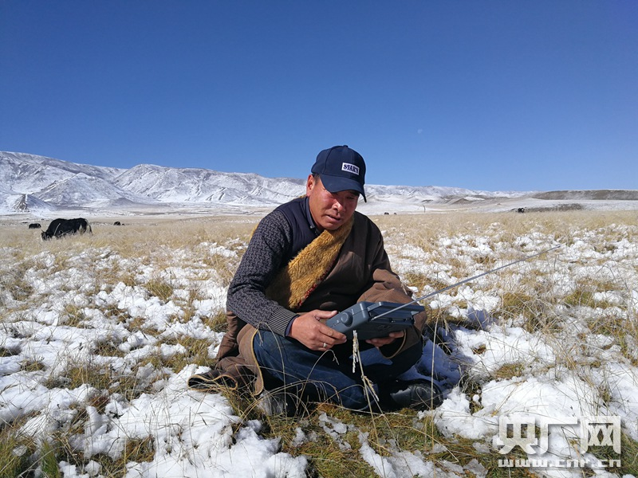

回眸：光影记录下的十九大时光

吉合生木在放牧途中收听广播（葛修远 摄）
吉合生木在放牧途中收听广播（葛修远 摄）
北接祁连山，南临柴达木，海北藏族自治州州府西海镇西侧的这片草原，有个好听的名字，叫“金银滩”。十月的草原，已下过好几场雪，丛丛积雪点缀着已有些泛黄的草场。牧民吉合生木家的帐篷暖烘烘的，炉子上正烧着奶茶。吉合生木摆弄着手上的收音机。这是国庆前，省里广电部门的干部专门送来的。自从有了它，吉合生木走到哪儿都带着它。
吉合生木：放羊期间不寂寞，很好的一个伙伴。
雪后的金银滩草原转眼就要进入冬季，单薄的帐篷已不适合居住。吉合生木的冬季定居点在县城附近。他说，2014年是政府出钱补助，帮他家进行了危房改造。
吉合生木：这个地方已经通电了，甚至网络什么的也通了。我每天提着收音机听十九大的信息和报道，也希望咱们祖国蒸蒸日上，繁荣强大。